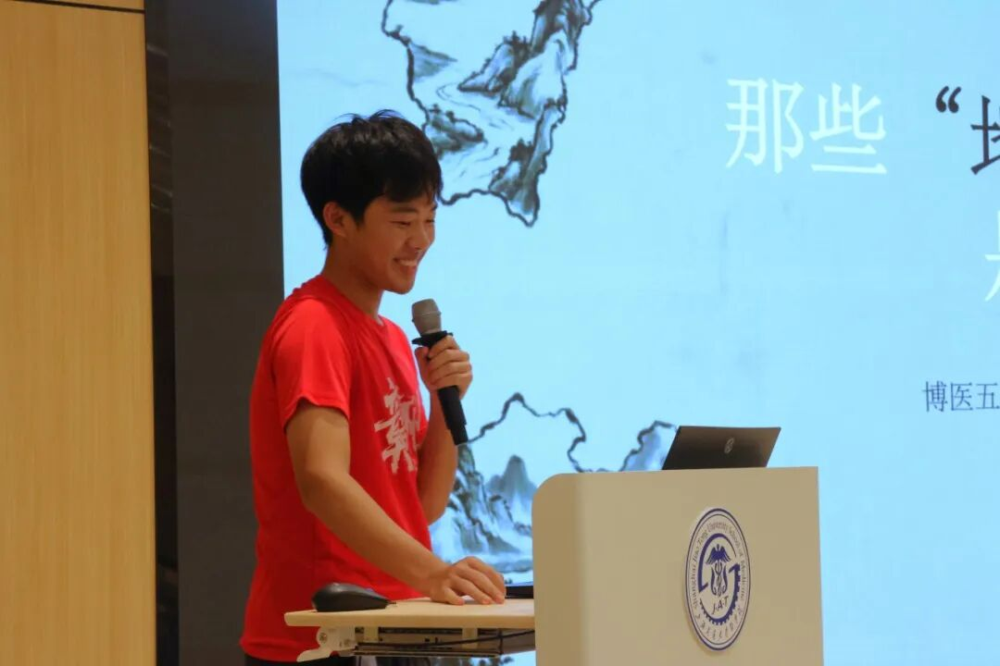
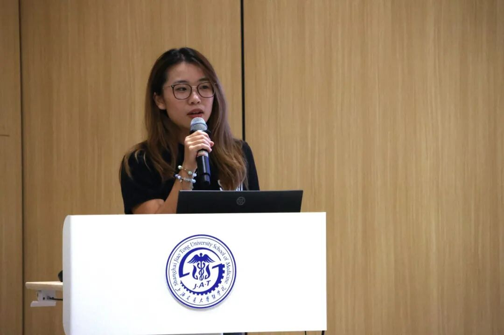
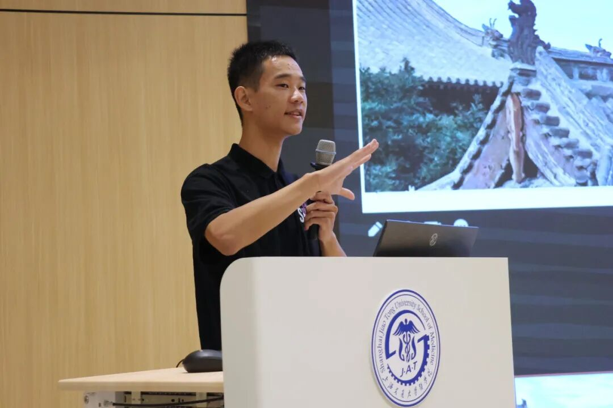
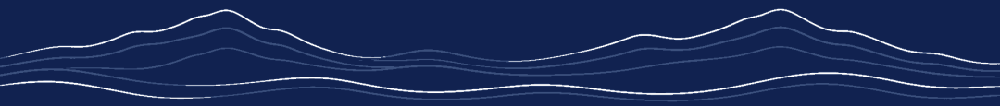

博医“山海谈”
博医“山海谈”沙龙是由上海交通大学医学院“荣昶-博医”卓越医学生培养计划（以下简称“博医计划”）推出的致力于促进朋辈交流的系列活动，通过“话题分享”与“茶话会”两个环节，鼓励学员分享兴趣所长、专业见闻与社会热点，在轻松与开放的氛围中交流思想、结识同好，以期拓展学员多元视野，提升沟通表达能力，促进不同学科与兴趣领域的交流融合。
引言
10月10日晚，博医“山海谈”第一期主题沙龙活动在浦东校区学生活动中心319教室顺利举行。
本期活动由博医计划五期学员王鑫迪主持，围绕地域刻板印象、音乐剧鉴赏与山西古建筑三大主题，由李家树、田韵笛、王鑫迪三位博医五期学员依次带来主题分享，博医计划五期学员踊跃参加，现场气氛热烈、掌声不断。
破除偏见，直面地域标签
活动伊始，李家树以《那些“地域黑”，是真的吗？》为题，将话题引向对社会认知的深度思考。他带领同学们直面那些被标签化的地域，了解它们的真实面貌。这不仅是一场关于地域的辟谣，更是一次对“刻板效应”与“认知惰性”的深度剖析，引发大家强烈的共鸣与思考。

乐韵悠长，漫步音乐剧场
随后，田韵笛带来《中外音乐剧发展史及经典作品鉴赏》的分享。她简要介绍了音乐剧的发展历史与主要流派，并借助《悲惨世界》《猫》《歌剧魅影》等经典作品的现场选段，与同学们共同鉴赏、交流。精彩的旋律感染了在场每一个人，也吸引了更多同学去了解、欣赏这门艺术并找到同好。

古建寻美，触摸时代气象
最后，王鑫迪以《山西古建——绝代风华》为题，带领听众走进山西古建的壮美世界。山西坐落着全中国最多的古建筑，一柱一梁、一砖一瓦，讲述的正是时代的气象。他讲述了战火中测绘古建的先驱者们的事迹，这是一次美与情怀的旅途：那些建筑，绝代风华；那些古建人，风华绝代。

围炉茶话，思想自由碰撞
精彩的分享结束后，活动进入轻松的茶话会环节。学员们围坐闲谈，就自己感兴趣的话题展开小范围的自由交流。有人意犹未尽地继续探讨古建的斗拱飞檐，有人热络地约起下一次观剧，也有人围绕“地域偏见”交换着各自的见闻与思考。轻松惬意的氛围里，陌生化为熟悉，跨界交融、彼此启发。
左右滑动查看更多

关于博医
上海交通大学医学院“荣昶-博医”卓越医学生培养计划是上海交通大学医学院在上海荣昶公益基金会的支持下决定开展，具体由共青团上海交通大学医学院委员会组织实施的培养计划。该计划以践行有灵魂的卓越医学创新人才培养为理念，发挥上海交通大学医学院在医学教育及医疗卫生服务领域的综合优势，聚焦面向未来的卫生健康领导力，培养具有人文素养、创新思维、家国情怀、领袖气质、全球视野的高层次“医+X”卓越医学创新人才，担负起健康中国建设使命。
摄影丨博医计划五期学员 25级口五 梅家琳
文案丨博医计划五期学员 25级临五 王鑫迪
排版丨博医计划五期学员 25级英五 都泓毅